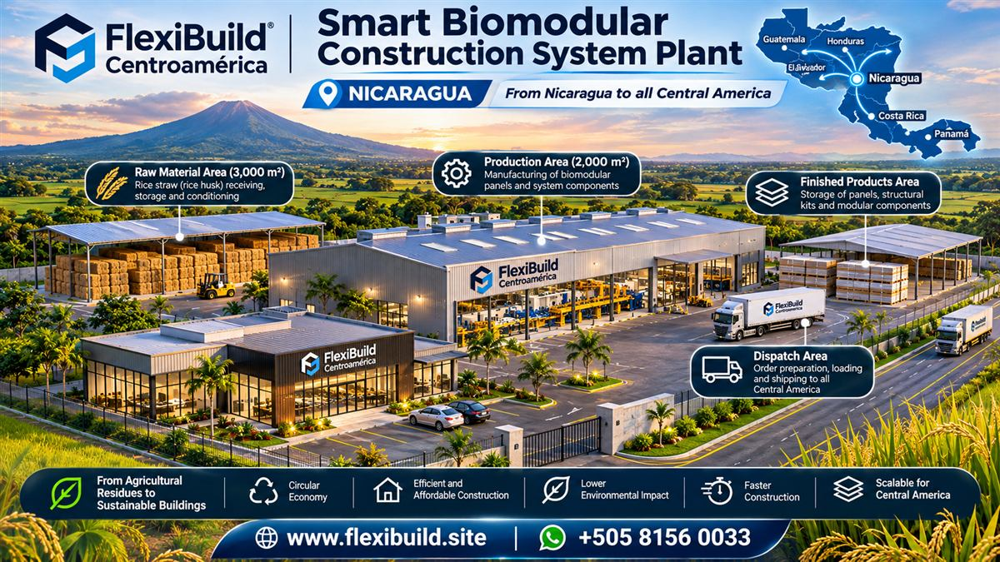

Nicaragua · Proposed regional production hub
Biomodular Production Investment Opportunity
FlexiBuild is seeking companies, investors and strategic partners interested in exploring a local agricultural-fiber board production plant and a platform for construction solutions for Nicaragua and regional markets.
This project is in development; this page is not an offer of guaranteed returns. Project scope, business plan, funding needs and participation terms require further discussion and due diligence.
Request preliminary information
The proposal
Local production connected to regional construction needs
The proposal considers production of agricultural-fiber boards, development of construction systems, regional sales and residential and commercial projects. It aims to evaluate locally sourced rice straw, industrial employment and manufacturing closer to regional construction markets.
Production
Assess plant scope, equipment, licensing, integration and supply agreements.
Product development
Coordinate building systems, engineering, testing and applications.
Market development
Evaluate demand, customers, distribution and country-specific requirements.
Project diligence
Review feasibility, funding structure, business plan and next milestones.
For prospective partners
Discuss the opportunity and request preliminary information
Companies, funds, financial institutions and individual investors may contact FlexiBuild to discuss scope, proposed structure, market assumptions and next steps. Participation terms and financial information are shared directly as they are developed.
No investment amount, return, production capacity or operating date is represented on this page. The proposed facility is not built or operating.
Ask by WhatsApp Email FlexiBuild